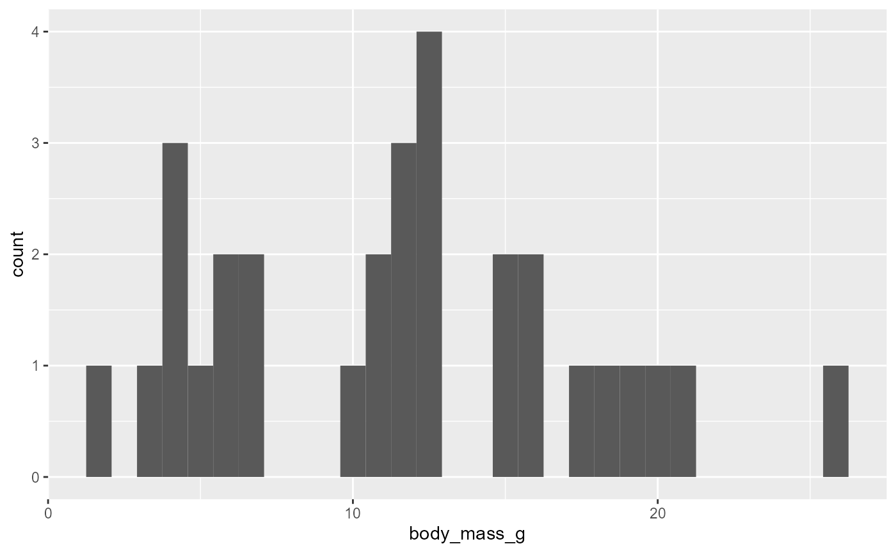
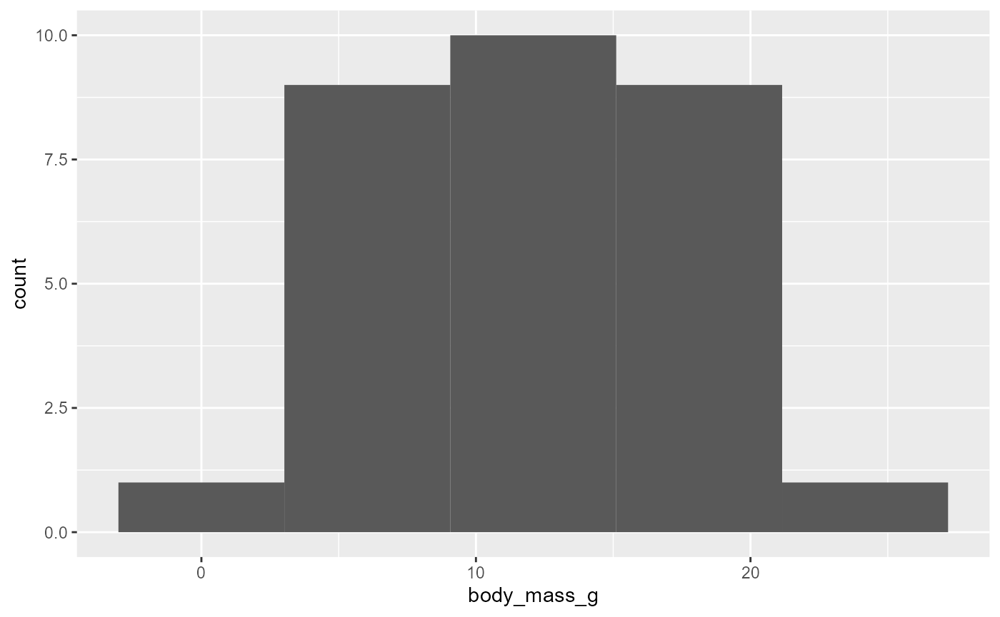
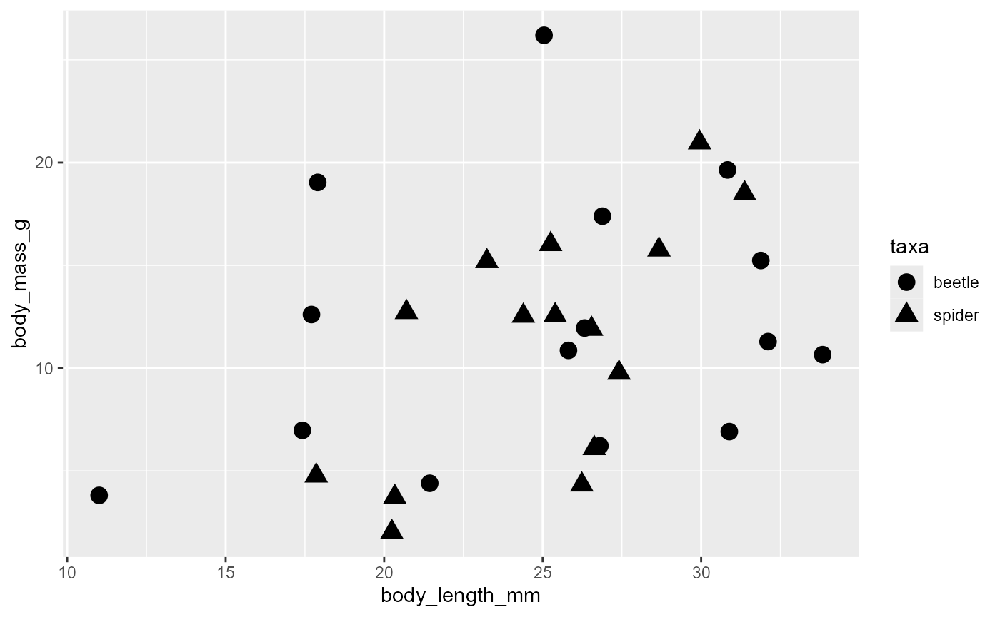
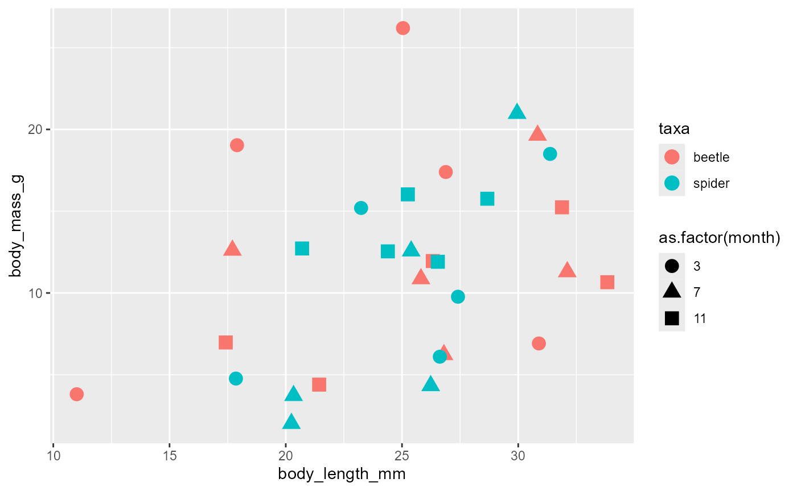

Lab 04b: Graphing using ggplot
ENVS475: Experimental Analysis and Design
January, 2024
Source:vignettes/articles/lab_04b_ggplot.Rmd
lab_04b_ggplot.RmdAbout
This lab will introduce you to the ggplot2 package in R.
This is a powerful and flexible package which is capable of producing
publication quality graphics.
Preliminaries
Before we begin, make sure to download the data from D2L. The data we
are using in this lab is a small simulated data set called
ggplot_lab_invert_survey.csv. You will also need to
download galapago-finches.csv for the homework assignment.
Make sure to place both of these files in the data/ folder
in your R Project, otherwise you will need to modify the code below to
have it run correctly.
ggplot2is a part of thetidyverseand was included when you previously raninstall.packages("tidyverse")Remember you only need to install packages on each machine once.
Getting Started
- So far we’ve been mostly working with data sets that are built into R, or making our own small data sets within our scripts.
- Now we will need to read in the data sets into R.
- But first, take a look at the
ggplot_lab_invert_survey.csvdata set by opening them. -
Right-Click on invert.csv in your file explorer program to Open
With Notepad or text editor
-
Right-Click on invert.csv in your file explorer program to Open
With Notepad or text editor
- This data is comma separated, which is the default type in the
read_csv()function.read_csv()is a part of thetidyverseand is the the main function that we will throughout this course.- There is also a
read.csv()function that comes with the base installation of R. It behaves very similarly but is slightly less “smart” thanread_csv().
- There is also a
- We’ll call our data frame
invertand assign it the output fromread_csv() - We still to supply the file name in quotes as the first
argument
- to tell R that it’s located in the
data/folder, we add this to the beginning of the filename
invert <- read_csv("data/ggplot_lab_invert_survey.csv")-
Did everyone successfully load the data into R?
- Are you in your R-project?
- Do you have a
data/folder?
- Is your
ggplot_lab_invert_survey.csvin thedata/folder?
- Are you in your R-project?
Whenever you load a dataset into R, it is always a good idea to take a look at it to familiarize yourself with the structure. Run the following lines of code in RStudio one by one (I have removed the output to save space here):
names(invert)## [1] "month" "taxa" "body_length_mm" "body_mass_g"
head(invert)## # A tibble: 6 × 4
## month taxa body_length_mm body_mass_g
## <dbl> <chr> <dbl> <dbl>
## 1 3 beetle 26.9 17.4
## 2 7 beetle 32.1 11.3
## 3 11 beetle 21.4 4.40
## 4 3 beetle 25.0 26.2
## 5 7 beetle 17.7 12.6
## 6 11 beetle 31.9 15.2
tail(invert)## # A tibble: 6 × 4
## month taxa body_length_mm body_mass_g
## <dbl> <chr> <dbl> <dbl>
## 1 3 spider 23.2 15.2
## 2 7 spider 20.2 2.02
## 3 11 spider 25.3 16.0
## 4 3 spider 27.4 9.77
## 5 7 spider 25.4 12.6
## 6 11 spider 26.5 11.9
str(invert)## spc_tbl_ [30 × 4] (S3: spec_tbl_df/tbl_df/tbl/data.frame)
## $ month : num [1:30] 3 7 11 3 7 11 3 7 11 3 ...
## $ taxa : chr [1:30] "beetle" "beetle" "beetle" "beetle" ...
## $ body_length_mm: num [1:30] 26.9 32.1 21.4 25 17.7 ...
## $ body_mass_g : num [1:30] 17.4 11.3 4.4 26.2 12.6 ...
## - attr(*, "spec")=
## .. cols(
## .. month = col_double(),
## .. taxa = col_character(),
## .. body_length_mm = col_double(),
## .. body_mass_g = col_double()
## .. )
## - attr(*, "problems")=<externalptr>
summary(invert)## month taxa body_length_mm body_mass_g
## Min. : 3 Length:30 Min. :11.01 Min. : 2.020
## 1st Qu.: 3 Class :character 1st Qu.:20.89 1st Qu.: 6.397
## Median : 7 Mode :character Median :26.02 Median :11.931
## Mean : 7 Mean :25.00 Mean :11.671
## 3rd Qu.:11 3rd Qu.:28.35 3rd Qu.:15.630
## Max. :11 Max. :33.83 Max. :26.195You can see the entire
invertobject by running the following command:View(invert)-
we can see that it includes information on:
- the month (as a number) of the sampling month
- the taxa (either
beetleorspider) as a character vector - the body length (in millimeters) of each individual
- and the body mass (in grams) of each individual
- the month (as a number) of the sampling month
ggplot2
Very popular plotting package
Makes publication quality plots quickly
Declarative - describe what you want not how to build it
Contrasts w/Imperative - how to build it step by step
Basics
ggplot basic syntax
\[\underbrace{ggplot}_{initiate\;
plot}(\underbrace{data = df}_{data\;frame},\; \underbrace{aes(x =\; , y
= \;, color = \;)}_{plot\; attributes}) +
\underbrace{geom\_line()}_{geometry}\] * To build a plot using
ggplot we start with the ggplot() function
ggplot()-
ggplot()creates a base ggplot object that we can then add things to- Think of it as a blank canvas
Plot attributes, mapping and aes()
- We can also add optional arguments for information to be shared across different components of the plot
- The two main arguments we typically use here are
-
data- which is the name of the data frame we are working with, soinvert -
mapping- which describes which columns of the data are used for different aspects of the plot - We create a
mappingby using theaesfunction, which stands for “aesthetic”, and then linking columns to pieces of the plot - We’ll start with telling ggplot what value should be on the x and y axes
- Let’s plot the relationship between the
body_length_mmof invertebrates to theirbody_mass_g
- note that I start a new line after each
,and that Rstudio automatically indents for us. This improves readability and makes it easier to look for typos.
- Notice we now have “CIRC” on the x-axis and “HEIGHT” on the y-axis
- This still doesn’t create a figure, it’s just a blank canvas and some information on the default values for the data and mapping columns to axes of the plots
Plot Layers
We can add data to the plot using layers
We do this by adding a
+after the theggplot()function and then adding something called ageom, which stands forgeometryTo make a scatter plot we use
geom_point()
ggplot(data = invert,
mapping = aes(x = body_length_mm,
y = body_mass_g)) +
geom_point()It is standard to hit
Enterafter the plus so that each layer shows up on its own lineTo change things about the layer we can pass additional arguments to the
geom-
We can do things like change
the
sizeof the points, we’ll set it to3the
colorof the points, we’ll set it to"blue"the transparency of the points, which is called
alpha, we’ll set it to 0.5
ggplot(data = invert,
mapping = aes(x = body_length_mm,
y = body_mass_g)) +
geom_point(size = 3, color = "blue", alpha = 0.5)- To add labels (like documentation for your graphs!) we use the
labsfunction
ggplot(data = invert,
mapping = aes(x = body_length_mm,
y = body_mass_g)) +
geom_point(size = 3, color = "blue", alpha = 0.5) +
labs(x = "Body length [mm]",
y = "Body mass [g]",
title = "Simulated ground-dwelling invertebrate survey")One Continuous Variable
Throughout the semester, we will want to see the distribution of one continuous variable. The two main ways we will do that is through:
Histograms
Boxplots
Histograms
We can make a histogram of
body_mass_gby modifying our earlier code.Note only one variable, so we remove the
y=...part.We also change
geom_point()togeom_histogram
ggplot(data = invert,
mapping = aes(x = body_mass_g)) +
geom_histogram()## `stat_bin()` using `bins = 30`. Pick better value with `binwidth`.
-
geom_histogram()groups observations into bins- i.e., all the numbers between 10-12 g
automatically picks bin numbers based on data (graph above used 30 bins, see message output), but we can modify this using the
binsargument
5 bins
ggplot(data = invert,
mapping = aes(x = body_mass_g)) +
geom_histogram(bins = 5)
- see that there are now 5 bins, but the “edges” of the bins are unclear
Binwidth
We can set the size of the bins with
binwidthargumentfor example, let’s say we want bins that are 2.5 g across
ggplot(data = invert,
mapping = aes(x = body_mass_g)) +
geom_histogram(binwidth = 2.5)Histogram attributes
-
We can change the attributes of the histogram output in similar ways as above
Common arguments are:
fill,color(outline),size(outline), andalpha(transparency).You can also explore different “themes”. Below is
theme_bw(), but you can trytheme_classic(),theme_dark(),theme_void(), etc.
ggplot(data = invert,
mapping = aes(x = body_mass_g)) +
geom_histogram(binwidth = 2.5,
fill = "dodgerblue",
color = "black",
size = 2,
alpha = 0.5) +
theme_bw()## Warning: Using `size` aesthetic for lines was deprecated in ggplot2 3.4.0.
## ℹ Please use `linewidth` instead.
## This warning is displayed once every 8 hours.
## Call `lifecycle::last_lifecycle_warnings()` to see where this warning was
## generated.Boxplots
Boxplots summarize the data distribution
AKA “Cat and Whisker” Plots
ggplot(data = invert,
mapping = aes(x = body_mass_g)) +
geom_boxplot() * whiskers: show minimum (left side) and maximum (right side) of
data
* whiskers: show minimum (left side) and maximum (right side) of
data
Box: shows where 50% of the data lies
Line in middle of box is the median
-
Useful to loo for normal distributions:
- Symmetry of box, whiskers, etc.
Boxplot attributes
ggplot(data = invert,
mapping = aes(x = body_mass_g)) +
geom_boxplot(fill = "red",
color = "black")Density Plots
Density plots show the full distribution
i.e., a histogram has discrete bins, but a density plot is continuous
ggplot(data = invert,
mapping = aes(x = body_mass_g)) +
geom_density(fill = "pink",
alpha = 0.75) +
theme_dark()You should now be able to complete problem 01 in the homework assignment
One Continuous Variable, and Categories
Boxplots
We will often want to compare the distributions between two groups.
We can do this by modifying our boxplot code above by adding a grouping
variable as our y = ... in the aes()
function
ggplot(data = invert,
mapping = aes(x = body_mass_g,
y = taxa)) +
geom_boxplot()- we can also vary the color/fill by taxa by including it in the
aes()function
ggplot(data = invert,
mapping = aes(x = body_mass_g,
y = taxa,
fill = taxa)) +
geom_boxplot()- ggplot automatically picked two colors for us based on the values in
the
taxacolumn
Manually
See a list of colors available in ggplot
ggplot(data = invert,
mapping = aes(x = body_mass_g,
y = taxa,
fill = taxa)) +
geom_boxplot() +
scale_fill_manual(values = c("dodgerblue", "hotpink"))- note that this does not work if you put it in the
geom_boxplot()argument:
ggplot(data = invert,
mapping = aes(x = body_mass_g,
y = taxa)) +
geom_boxplot(fill = taxa)- Likewise, if you put a fill/color argument in the
geom_boxplot()function, it will overwrite what you mapped above
ggplot(data = invert,
mapping = aes(x = body_mass_g,
y = taxa,
fill = taxa)) +
geom_boxplot(fill = "black")Categorical vs. continuous variables
Our data has the results of three surveys across months
we may want to see if there are different distributions across months
ggplot(data = invert,
mapping = aes(x = body_mass_g,
fill = month)) +
geom_boxplot()## Warning: The following aesthetics were dropped during statistical transformation: fill
## ℹ This can happen when ggplot fails to infer the correct grouping structure in
## the data.
## ℹ Did you forget to specify a `group` aesthetic or to convert a numerical
## variable into a factor?this didn’t work because
monthis a number, which R interprets as a continuous variable.notice the warning discusses “group” structure of the data
we can get around this a number of ways.
the easiest at this point is to force month to be a
factor(what R calls a categorical variable).
ggplot(data = invert,
mapping = aes(x = body_mass_g,
fill = as.factor(month))) +
geom_boxplot()Histograms
We can also do a similar thing with histograms.
-
note that we need to remove the
y=...argument, and we also need to addposition = "identity"to the histogram call.- otherwise the counts are “stacked” and the display is misleading
ggplot(data = invert,
mapping = aes(x = body_mass_g,
fill = taxa)) +
geom_histogram(position = "identity",
alpha = 0.75) +
scale_fill_manual(values = c("grey30", "goldenrod")) +
theme_bw()## `stat_bin()` using `bins = 30`. Pick better value with `binwidth`.You should now be able to complete problem 02 in the homework assignment
Two Continuous Variables
Scatter Plots
- Display two continuous variables by mapping them to
xandy
ggplot(data = invert,
mapping = aes(x = body_length_mm,
y = body_mass_g)) +
geom_point(size = 3)map attributes to other columns
Color
Using a categorical variable
-
Gives discrete colors
- i.e., “red”, or “blue”
ggplot(data = invert,
mapping = aes(x = body_length_mm,
y = body_mass_g,
color = taxa)) +
geom_point(size = 3)Using a continuous variable
gives “shades” of one color, based on value
ggplot(data = invert,
mapping = aes(x = body_length_mm,
y = body_mass_g,
color = month)) +
geom_point(size = 3)Shape
ggplot(data = invert,
mapping = aes(x = body_length_mm,
y = body_mass_g,
shape = taxa)) +
geom_point(size = 4)
Shape + color
ggplot(data = invert,
mapping = aes(x = body_length_mm,
y = body_mass_g,
color = taxa,
shape = as.factor(month))) +
geom_point(size = 4)
geom_smooth()
We will often want to estimate the relationship between our predictor (
x) and our response (y).do this with
geom_smooth()
ggplot(data = invert,
mapping = aes(x = body_length_mm,
y = body_mass_g)) +
geom_point(size = 4) +
geom_smooth()## `geom_smooth()` using method = 'loess' and formula = 'y ~ x'the default is a “squiggly line”
we will limit ourselves to linear relationships, so add
method = "lm"
ggplot(data = invert,
mapping = aes(x = body_length_mm,
y = body_mass_g)) +
geom_point(size = 4) +
geom_smooth(method = "lm")## `geom_smooth()` using formula = 'y ~ x'geom_smooth()inherits other aspects from aes.add a smooth for both taxa:
ggplot(data = invert,
mapping = aes(x = body_length_mm,
y = body_mass_g,
color = taxa)) +
geom_point(size = 4) +
geom_smooth(method = "lm")## `geom_smooth()` using formula = 'y ~ x'Facets
In any of the plots, it is also possible to add facets, which gives each group their own panel:
ggplot(data = invert,
mapping = aes(x = body_length_mm,
y = body_mass_g,
color = taxa)) +
geom_point(size = 4) +
geom_smooth(method = "lm") +
facet_wrap(~taxa)## `geom_smooth()` using formula = 'y ~ x'
ggplot(data = invert,
mapping = aes(x = body_mass_g,
y = taxa,
fill = taxa)) +
geom_boxplot() +
scale_fill_manual(values = c("dodgerblue", "hotpink")) +
facet_wrap(~taxa)can also add a different variable
this helps to visualize when we have 2+ grouping variables
ggplot(data = invert,
mapping = aes(x = body_mass_g,
y = taxa,
fill = taxa)) +
geom_boxplot() +
scale_fill_manual(values = c("dodgerblue", "hotpink")) +
facet_wrap(~month)
Coda
You should now be able to finish the homework. The below information is provided for your personal edification
Grammar of graphics
Uniquely describe any plot based on a defined set of information
Leland Wilkinson
-
Geometric object(s)
Data
Mapping
Statistical transformation
Position (allows you to shift objects, e.g., spread out overlapping data points)
Facets
Coordinates (coordinate systems other than cartesian, also allows zooming)
Saving plots as new files
ggsave()function saves whatever the last plot you made was.let’s rerun this code:
ggplot(data = invert,
mapping = aes(x = body_mass_g,
y = taxa,
fill = taxa)) +
geom_boxplot() +
scale_fill_manual(values = c("dodgerblue", "hotpink")) +
facet_wrap(~month)- we will now save it into the home directory of our project and name the file:
ggsave("invert_by_month_taxa.jpg")- The type of the file is determined by the file extension
ggsave("invert_by_month_taxa.jpg")-
if you want to save it in a specific folder, add it as
"folder_name\"in front of the file name- Make sure you actually have a folder named that before saving!
For example, if you followed the recommended file structure for this course, you should have a
homeworkfolder.to save the last
ggplotfigure you made as a .png file to your homework folder, enter the following:
ggsave("homework/invert_by_month_taxa.png")Check your folder to make sure the file is there.
Open it to see how it looks
You may want to delete this from your homework folder so you don’t get confused later.